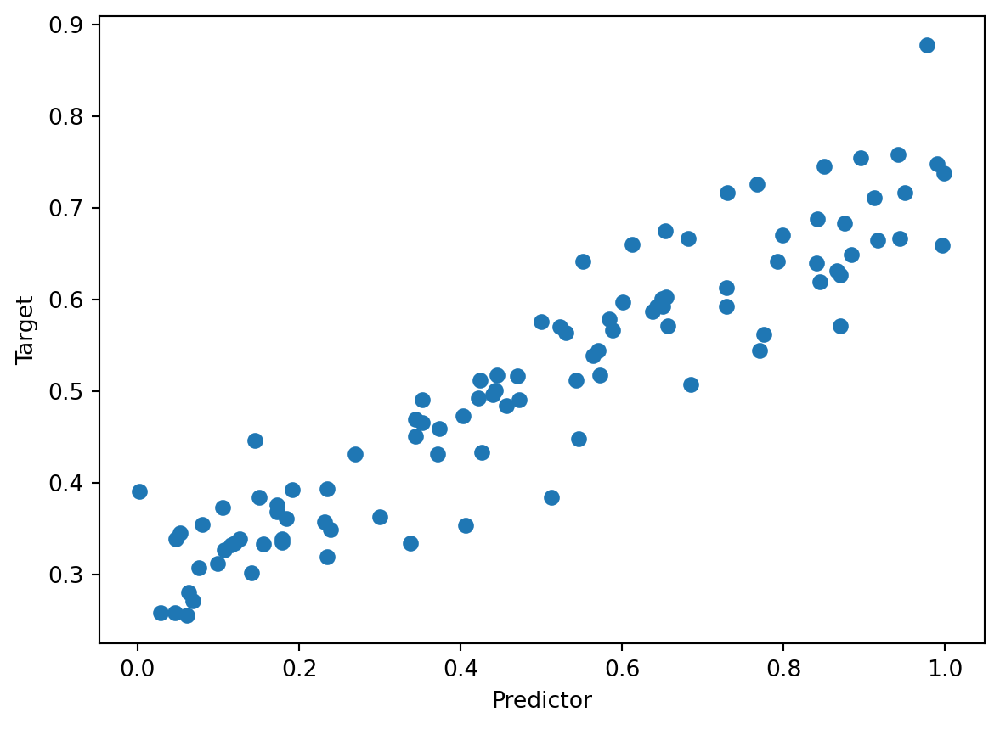

flowchart LR
subgraph inputs
w
b
end
subgraph constants
x
y
end
w & x --> *
b & * --> +
+ & y --> -
- --> m[*]
- --> m[*]
Automatic Differentiation and Backpropagation
$$
$$
The code presented in this lecture is derived from Boaz Barak’s blog post “Yet Another Backpropagation Tutorial” on his blog Windows on Theory. This code was in turn inspired by the micrograd package developed by Andrej Karpathy.
The Computational Graph
A computational graph is a directed acyclic graph that describes the sequence of computations performed by a function. For example, consider the following function, which computes the loss in 1D linear regression on a single observation:
\[ \mathcal{L}(w, b) = (wx + b - y)^2\;. \]
We might be accustomed to looking at functions like these and taking them in “all at once.” We can, however, break down the steps into individual operations. Let’s suppose that all we know how to do is add, subtract, and multiply pairs of numbers. We could write the complete sequence of calculations like this:
h_1 = w*x
h_2 = h_1+b
h_3 = h_2 - y
h_4 = h_3*h_3A nicer way to present this sequence of calculations is through a computational graph:
Arranging all our computations in an orderly computational graph turns out to be the key to automatic differentiation, which is the topic of today’s lecture.
Automatic Differentiation
Our standard gradient descent update is
\[ \mathbf{w}^{(t+1)} = \mathbf{w}^{(t)} - \alpha \nabla \mathcal{L}(\mathbf{w}^{(t)})\;, \]
where \(\mathcal{L}\) is the empirical risk. Most modern models don’t use exactly this update, but instead use other methods involving the gradient or stochastic estimates of it. Even though we’re looking at more complicated algorithms, though, we still need to calculate gradients! This lecture is all about how to do that efficiently.
Differentiation By Hand
To start, let’s compute the gradient of our function \(\mathcal{L}(w, b)\) with respect to the parameters \(w\) and \(b\). Doing this requires us to apply the chain rule. For single variables, the chain rule says that, if \(f(x) = g(h(x))\), then
\[ \frac{df(x_0)}{dx} = \frac{dg(h(x_0))}{dy} \frac{dh(x_0)}{dx} \]
Mechanically, the chain rule says that we start be differentiating the outermost operation (in this case, squaring) and then multiplying by the derivative of what’s inside. So, applying the chain rule here to our linear regression loss function yields \[ \begin{aligned} \frac{\partial \mathcal{L}(w_0, b_0)}{\partial w} &= 2(w_0 x + b) w_0 \\ \frac{\partial \mathcal{L}(w_0, b_0)}{\partial b} &= 2(w_0 x + b) \end{aligned} \]
This process of working out-to-in when differentiating a function corresponds to working right-to-left or backwards in the computational graph. At each step, the computational graph combines two numbers to produce a third number. We could formally write down all the steps in the computational graph like this:
\[ \begin{aligned} z_1 &= w*x \\ z_2 &= z_1 + b \\ z_3 &= z_2 - y \\ \mathcal{L}&= z_3*z_3 \end{aligned} \]
We then work bottom-to-top to compute all the derivatives.
\[ \begin{aligned} \frac{\partial \mathcal{L}}{\partial \mathcal{L}} &= 1 \\ \frac{\partial \mathcal{L}}{\partial z_3} &= \frac{\partial \mathcal{L}}{\partial \mathcal{L}}\frac{\partial \mathcal{L}}{\partial z_3} = 2z_3 \\ \frac{\partial \mathcal{L}}{\partial z_2} &= \frac{\partial \mathcal{L}}{\partial z_3} \frac{\partial z_3}{\partial z_2} = 2z_3\times 1 \\ \frac{\partial \mathcal{L}}{\partial z_1} &= \frac{\partial \mathcal{L}}{\partial z_2} \frac{\partial z_2}{\partial z_1} = 2z_3\times 1\times 1 \\ \frac{\partial \mathcal{L}}{\partial w} &= \frac{\partial \mathcal{L}}{\partial z_1} \frac{\partial z_1}{\partial w} = 2z_3\times 1\times 1\times x \\ \frac{\partial \mathcal{L}}{\partial b} &= \frac{\partial \mathcal{L}}{\partial z_1} \frac{\partial z_1}{\partial b} = 2z_3\times 1\times 1\times 1\;. \end{aligned} \]
We then need to replace each of \(z_1\), \(z_2\), and \(z_3\) with their values (in terms of \(w\), \(b\), \(x\), and \(y\)).
This process shows us some hints for how we can automate the process of taking a derivative:
- First, organize the computation into a computational graph.
- Conduct a forward pass in which we evaluate the computation at the inputs (in this case, \(w\) and \(b\)). This tells the value of the loss function and the value of each node in terms of the inputs.
- Conduct a backward pass in which we form the derivative of each node in terms of the derivatives of its children in the computational graph.
Backpropagation
The backpropagation (backprop) algorithm expresses this heuristic idea as an efficient algorithm. Backprop is one of the most important methods of automatic differentiation.
This process can be fully automated, as we’ll see below.
It is sometimes said that backprop is just the chain rule of (multivariable) calculus. This is not entirely correct. The chain rule is indeed the mathematical proof that backprop is correct, but backprop provides an extremely efficient, scalable way of organizing the computation of derivatives that is not implied by the chain rule.
Implementing Backprop
Here we’ll code up just enough of an automatic differentiation via backprop engine to implement 1D linear regression with stochastic gradient descent. The centerpiece of the implementation is the Value class. You can think of the Value class as representing a node in the computation graph. Each node has:
data(the number currently stored at that node).grad, the derivative of the final value in the computational graph with respect to the node’s data.- A
_backwardmethod which will be used to compute the gradient of the node. What this method actually is will depend on how the node is used in future computations. - A set of
_prev(nodes that are “previous” to the current node in the sense of being upstream in the computational graph).
class Value:
""" stores a single scalar value v
and placeholder for derivative d output/ d v"""
def __init__(self, data, _children=()):
self.data = data
self.grad = 0
self._backward = lambda: None
self._prev = set(_children)The most important method of this class, which handles backwards navigation along the computational graph, is the backward method:
def backward(self, visited = None):
1 if visited is None:
visited= set([self])
self.grad = 1
2 self._backward()
3 for child in self._prev:
if not child in visited:
visited.add(child)
child.backward(visited)
Value.backward = backward # assign this function as a method of Value- 1
- This case corresponds the top-level node in the computational graph. In our setting this will usually be the value of the loss function.
- 2
-
This is the step in which we call the node’s internal
_backward()method. This method “does the calculus” and depends on how the node was computed. - 3
- We then need to go through every node that is used in the computation of this node and also calculate their gradients.
The backward method handles the recursive logic of automatic differentiation. However, it doesn’t do any of the actual math. We need to implement this math within each of the arithmetic operations that we are going to implement for the Value class. Here’s how we implement addition:
def __add__(self, other):
1 other = other if isinstance(other, Value) else Value(other)
2 out = Value(self.data + other.data, (self, other))
3 def _backward():
self.grad += out.grad
other.grad += out.grad
out._backward = _backward
return out
Value.__add__ = __add__ # assign this function as a method of Value- 1
-
This adds
otherto the computational graph, converting it to aValueif needed. - 2
-
We need to do the addition itself, log the fact that
selfandotherwere used as inputs into this operation, and return aValuethat contains both thedatareflecting the addition and the information about the inputs. - 3
-
Define a
_backwardmethod to update the gradients forselfandother, using upstream gradient information fromout, and attach it toout. This method will then be used whenbackwardis called. The exact structure of_backwardrequires that we do some calculus.
Let’s do another math operation. This operation is very similar, but with a slightly more complex _backward method that reflects the chain rule from calculus.
def __mul__(self, other):
other = other if isinstance(other, Value) else Value(other)
out = Value(self.data * other.data, (self, other))
def _backward():
self.grad += other.data * out.grad
other.grad += self.data * out.grad
out._backward = _backward
return out
Value.__mul__ = __mul__Having defined addition and multiplication, we can also pretty quickly define subtraction:
def __neg__(self): return self * -1
def __sub__(self, other): return self + (-other)
Value.__neg__ = __neg__
Value.__sub__ = __sub__Let’s see an example of this in action. We can define the function \(f(x) = (x + 2)^2 + x^3\). Let’s do this and compute \(f(3)\):
a = Value(3)
def f(x): return (x+2)*(x+2) + x*x*x
y = f(a)
print(f"computed value = {y.data}\n")computed value = 52
Now here’s the thing: because we can represent \(f\) in terms of multiplications and additions, we can also calculate \(f'(3)\), just by running the backward method. Since
\[ f'(x) = 2(x+2) + 3x^2\;, \]
we are expecting that \(f'(3) = 2(3+2) + 3\cdot 3^2 = 37\). Let’s check:
y.backward()
print(f"derivative = {a.grad}")derivative = 37Looks good!
Autodiff Linear Regression
We’ve implemented enough automatic differentiation that we can differentiation any function that can be constructed out of a combination of additions, subtractions, and multiplications. This is enough to do linear regression with stochastic gradient descent! We’ll focus on the 1-dimensional version, in which we want to minimize \[ \mathcal{L}(w, b) = \frac{1}{n}\sum_{i = 1}^n (wx_i + b - y_i)^2\;. \]
In stochastic gradient descent, we don’t actually need to evaluate all of these terms at once: instead, we can just evaluate (and differentiate) \[ \mathcal{L}_i(w, b) = (wx_i + b - y_i)^2\;. \]
Here’s the computational graph describing the loss function:
flowchart LR
subgraph inputs
w
b
end
w & x_i --> *
b & * --> +
+ & y_i --> -
- --> m[*]
- --> m[*]
In order to implement this with automatic differentiation, let’s first implement the predictor model \(f(x) = wx + b\) as a class, using
class Linear:
def __init__(self):
1 self.w,self.b = Value(np.random.rand()),Value(np.random.rand())
2 def __call__(self,x): return self.forward(x)
3 def forward(self, x): return self.w*x+self.b
4 def zero_grad(self): self.w.grad, self.b.grad = 0,0- 1
- Initialize a random slope \(w\) and intercept \(b\).
- 2
- What should happen when the model accepts input.
- 3
-
This backend to
__call__isn’t necessary; I just implemented it this way because PyTorch wants us to implement a method calledforwardfor our models. - 4
- Zero out the gradients (need to do after each round of gradient descent).
Now that we’ve implemented this model, we’re already to train it. First let’s create some random data:
import numpy as np
from matplotlib import pyplot as plt
w, b = np.random.rand(), np.random.rand()
n = 100
X = np.random.rand(n)
y = w*X + b + 0.05*np.random.randn(n)
plt.scatter(X, y)
plt.gca().set(xlabel = "Predictor", ylabel = "Target")[Text(0.5, 0, 'Predictor'), Text(0, 0.5, 'Target')]
And now let’s do stochastic gradient descent:
alpha = 0.01
epochs = 5
model = Linear()
order = np.arange(n) # order in which we'll visit the data
for t in range(epochs):
np.random.shuffle(order)
for i in order:
1 model.zero_grad()
2 loss = (model(X[i])-y[i])*(model(X[i])-y[i])
3 loss.backward()
4 model.w, model.b = (
model.w - alpha*model.w.grad,
model.b - alpha*model.b.grad
) - 1
- Zero out all previous gradient information in the model
- 2
- Compute the loss on a single data pair \((x_i, y_i)\) (we’re writing \(z^2\) as \(z \cdot z\) because we haven’t yet implemented powers, only multiplication).
- 3
- Compute the gradients of all the model parameters using automatic differentiation.
- 4
- Update the model parameters using gradient descent.
We’re now able to visualize our model parameters:
plt.scatter(X, y, alpha = 0.5, label = "data")
plt.gca().set(xlabel = "Predictor", ylabel = "Target", )
x_lin = np.linspace(0, 1, 101)
y_hat = model.w.data*x_lin + model.b.data
plt.plot(x_lin, y_hat, color = "black", label = "fitted model")
l = plt.legend()
Looks ok!
From Here to Torch
Once we understand the basic idea of automatic differentiation, it’s not so hard to see what goes in to making a high-performance framework like Torch:
- Implement lots and lots of math operations like
__add__and__mul__, with their corresponding_backwardsmethods. - Do these implementations for arrays rather than just numbers.
- Do those implementations in speedy, low-level code that can run on specialized hardware.
- Add various utility functions to make it easy to construct more complicated mathematical functions of the inputs.
© Phil Chodrow, 2023